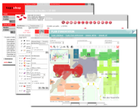

Welcome to the Home of CartoWeb!
CartoWeb is a comprehensive and ready-to-use Web-GIS (Geographical Information System) as well as a convenient framework for building advanced and customized applications.
Developed by Camptocamp SA, it is based on the UMN MapServer engine and is released under the GNU General Public License (GPL).
Written using innovative language PHP5, CartoWeb is highly modular and customizable thanks to its object-oriented architecture. It runs evenly on Windows or Unix-like platforms and shows its real power when associated to PostgreSQL/PostGIS.
Last but not least, CartoWeb may be set up as a SOAP Web Service enabling to have front-end server on one machine and data and map generation on an other.
Latest News
- 2013-09-12: CartoWeb 3.6.x - Source code on GitHub
- 2008-09-04: CartoWeb 3.5.0 is available (changelog).
- 2008-08-05: Tiny-docbook 1.6.19 released.
- 2008-05-13: Map Simplification Program 2.1 released.
- 2007-09-27: FOSS4G'07 CartoWeb For Beginners lab is now available.
- 2007-09-21: CartoWeb 3.4.0 is available (changelog).
- 2007-07-24: CartoWeb 3.4.0 Release Candidate 1 (RC1) is available (changelog).
- 2007-07-20: Tiny Docbook 1.6.17 released (changelog).
- 2007-03-05: Cartoweb Community, a new community portal dedicated to CartoWeb.
- 2006-09-20: FOSS4G'06 CartoWeb For Beginners workshop is now available here.
- 2006-08-31: CartoWeb 3.3.0 is released and available for download. Read what's new.
- 2006-04-13: contrib Vertex Simplification Program version 2.0 is available.
- 2006-02-27: CartoWeb Windows Installer now comes with MapServer 4.8.1 and other handy additions. The new installer is available here. Changes are detailed here.
- 2006-02-15: CartoWeb 3.2.0 is released and available for download. Read what's new.
- 2005-11-22: the CartoWeb Wiki is opened. Don't hesitate to share your knowledge!
- 2005-11-17: CartoWeb 3.1.0 Windows Installer is available here!
- 2005-11-10: CartoWeb 3.1.0 is out! Don't wait more, get your own copy! Check the ChangeLog out.